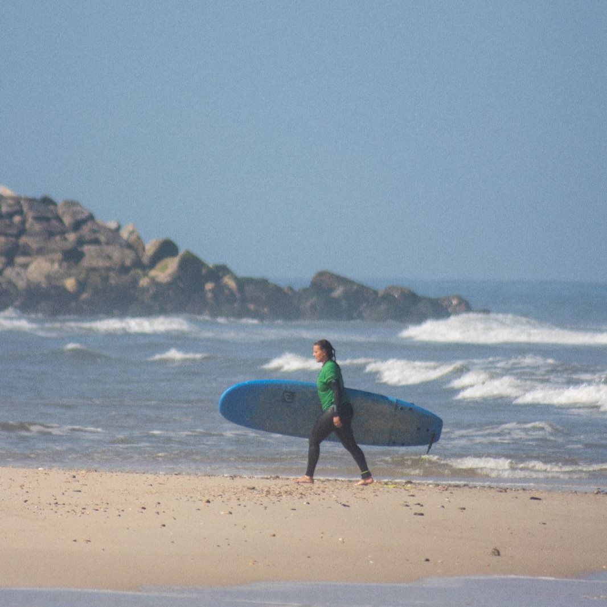
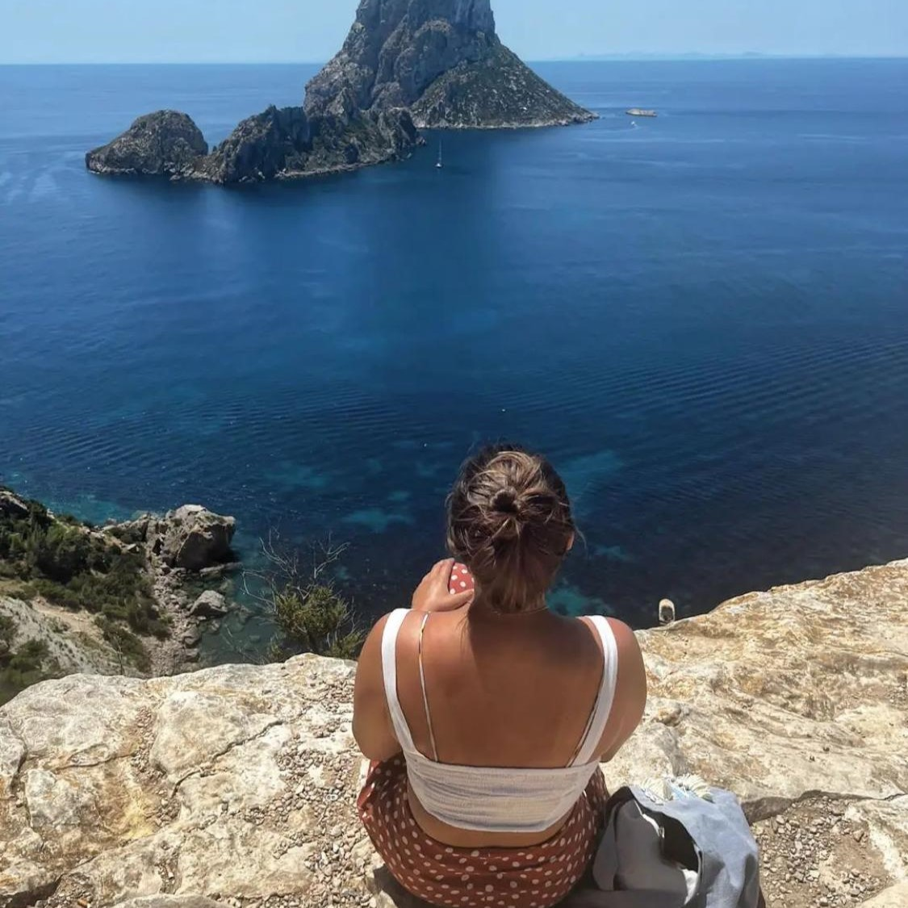
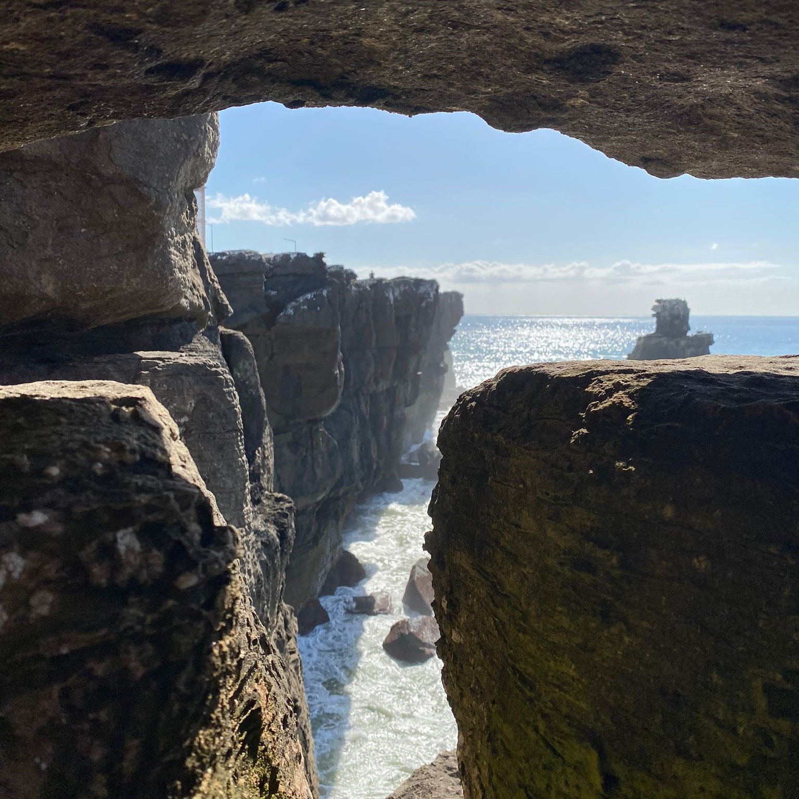
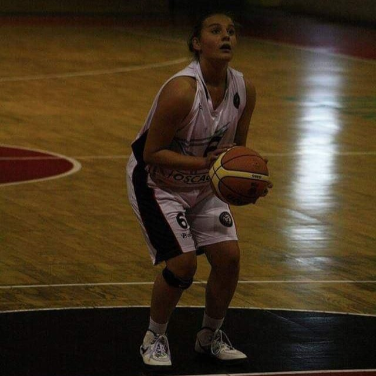
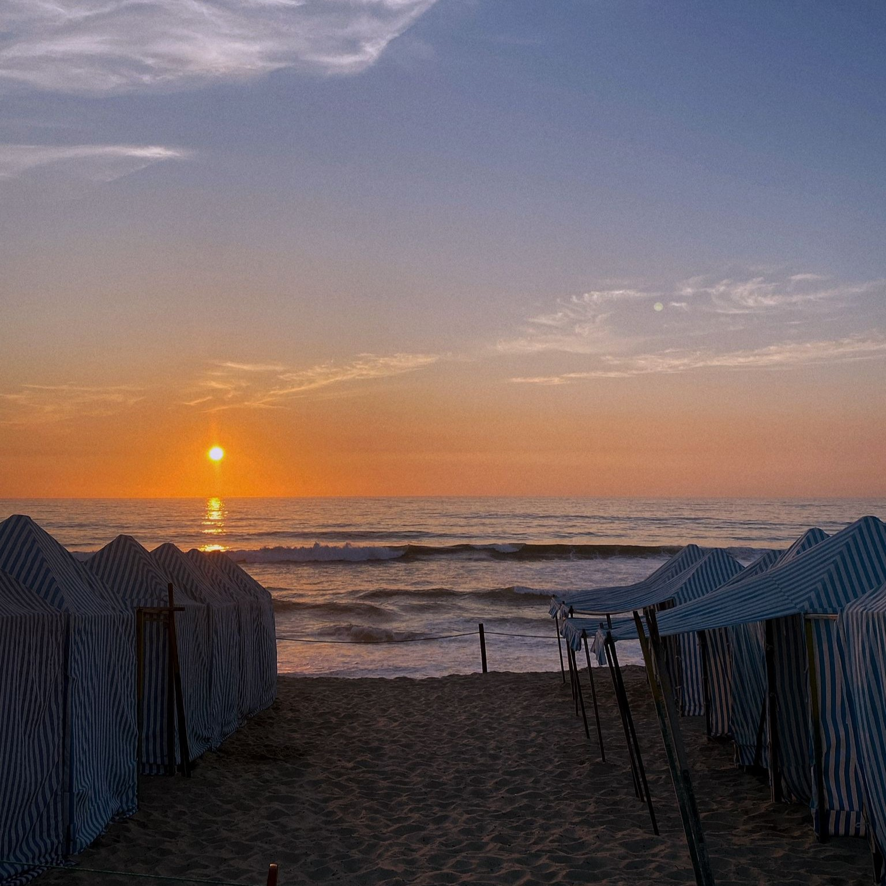
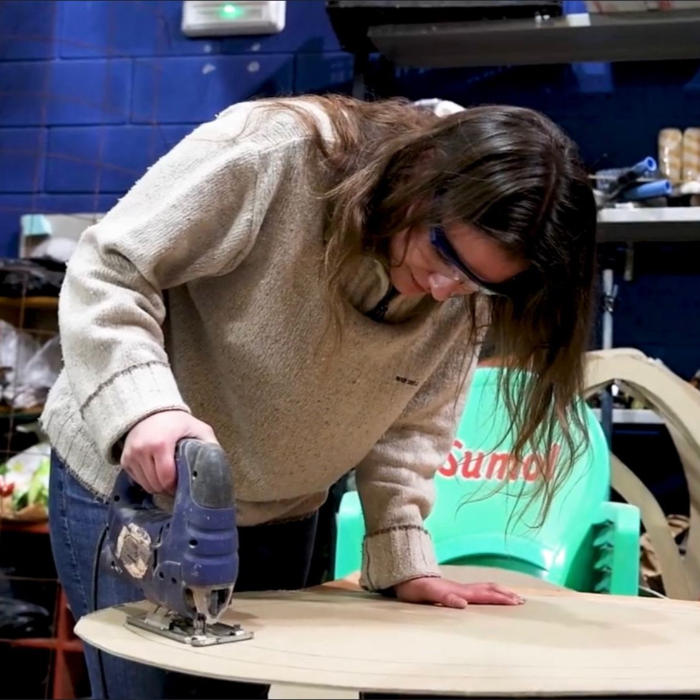
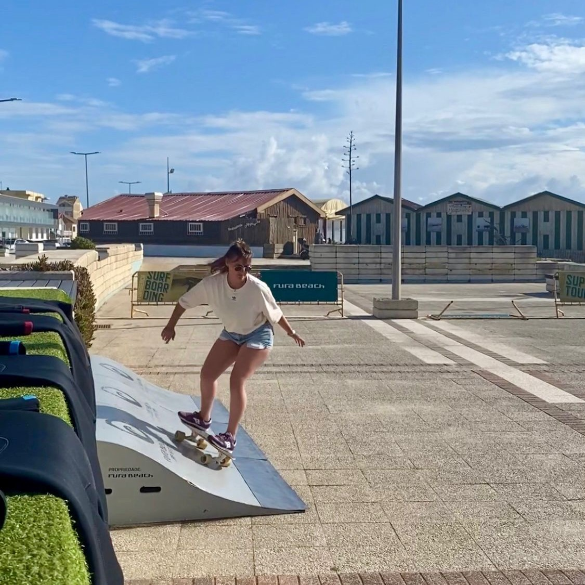

About Me
I'm a very social funny person that enjoys coding and techies and also sports a lot. I live by the ocean and I really need to feel that salty breeze in my daily life. Nature and music are essential for this human being!
My Interests
- Surfing: I love the ocean and spending time on the waves!

- Traveling: Exploring new cultures and meeting people from around the world.

- Photography: Capturing moments and landscapes through my lens.

- Basketball: Played basketball at a federated level, competing in local, regional, and national leagues, developing skills in teamwork, strategic thinking, and physical endurance as personal growth. 10 years of dedication to the sport.

- Nature: One of the things that brings me the most peace is spending time in nature. Watching the sunset is such a peaceful and grounding experience — it’s great to reflect.

- Crafting: There's something on learning how to build things.I make part of the Carnival of Ovar, my hometown , where we use woodworking, sculpting, painting, and other craftsmanship skills to bring the vision to life in structures and allegoric cars.

- Surfskate: I really like riding the surfskate and learn new skills on wheels.
